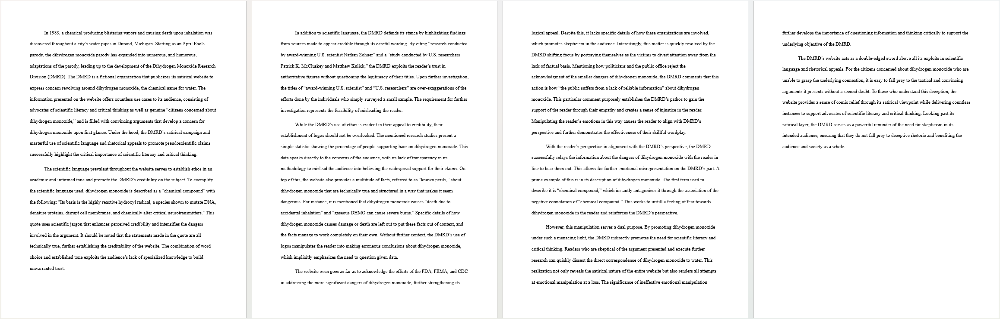

Rhetorical Strategies
While knowing of the existence of the three rhetorical appeals: ethos, logos, and pathos, I never truly realized how powerful these appeals actually are before this course. Diving deeper into the theory of rhetorical appeals, I have come to understand their effects they have and the reasons for using them.

My rhetorical analysis offered my insight into the rhetorical strategies used by the website dhmo.org. Nearly four whole pages of picking out specific rhetorical strategies, helping me understand the establishment of the rhetorical appeals. This provided me additional insights for the various ways that the rhetorical appeals could be established to produce a compelling and empowering argument.
Ethos: Credibility Appeal
I discovered that many small things could contribute to establishing ethos, the appeal to credibility. Elements such as the tone of the writing, the logical connections, and a demonstration of expertise play a significant role in determining whether the audience will even receive the argument positively.
In both my rhetorical analysis and letter project, I highlighted how my recipient, the Dihydrogen Monoxide Research Division, utilized a scientific tone and technical language which made them seem knowledgeable on the topic and therefore were credible. Even if the information provided was misleading, this realization helped me understand why their website was so effective at making me believe that Dihydrogen Monoxide was dangerous. This emphasized the importance of presenting myself as credible to gain the trust of the audience, and eventually their understanding.
I discovered that many small things could contribute to establishing ethos, the appeal to credibility. Elements such as the tone of the writing, the logical connections, and a demonstration of expertise play a significant role in determining whether the audience will even receive the argument positively.
In both my rhetorical analysis and letter project, I highlighted how my recipient, the Dihydrogen Monoxide Research Division, utilized a scientific tone and technical language which made them seem knowledgeable on the topic and therefore were credible. Even if the information provided was misleading, this realization helped me understand why their website was so effective at making me believe that Dihydrogen Monoxide was dangerous. This emphasized the importance of presenting myself as credible to gain the trust of the audience, and eventually their understanding.
Logos: Logical Appeal
I have also learned that logos, the logical appeal, has some overlap in establishing ethos, but remains its own entity. Providing evidence and showing logical reasoning not only establishes credibility, but also effectively supports my argument.
In my letter project, I emphasized the importance of skepticism, understanding that my audience would be reasonably skeptical of my arguments. This relayed the necessity of developing strong grounds for my argument.
In my creative nonfiction essay, I added a suitable number of hyperlinks to reliable sources and facts to establish that ground. I understood that my topic on GMOs was highly moderated by the government and current research, so I utilized the research to my own benefit to show that I have thought about my intended audience and convince them in ways that are suitable to them.
By introducing reliable sources in my writing, I can create those grounds and establish some credibility at the same time.
I have also learned that logos, the logical appeal, has some overlap in establishing ethos, but remains its own entity. Providing evidence and showing logical reasoning not only establishes credibility, but also effectively supports my argument.
In my letter project, I emphasized the importance of skepticism, understanding that my audience would be reasonably skeptical of my arguments. This relayed the necessity of developing strong grounds for my argument.
In my creative nonfiction essay, I added a suitable number of hyperlinks to reliable sources and facts to establish that ground. I understood that my topic on GMOs was highly moderated by the government and current research, so I utilized the research to my own benefit to show that I have thought about my intended audience and convince them in ways that are suitable to them.
By introducing reliable sources in my writing, I can create those grounds and establish some credibility at the same time.
Pathos: Emotional Appeal
Sometimes, it came to me that a logical appeal isn't necessary in order to deliver an argument. Certain contexts demand the establishment of pathos, the emotional appeal, to connect to the audience on a deeper level and bring in their understanding.
Many advertisements, especially awareness advertisements, rely heavily on emotional appeals to convey their message. This is an interesting approach that still remains effective, even in the absence of logos.
I tried establishing pathos a great deal in my narrative in my creative nonfiction essay. I realized that a well-crafted narrative could hook the reader's interest and emotions without muddling it with any cold, hard evidence. I believe it was successful and helped me understand the absolute power of pathos.
Through the grueling hours in the experience of developing an emotional narrative, I find pathos as a means to connect to my audience on a deeper, more emotional level. I understood that appealing to the emotions of the audience can make my arguments more compelling and relatable, as an additional way of guiding them to understanding my perspectives.
Sometimes, it came to me that a logical appeal isn't necessary in order to deliver an argument. Certain contexts demand the establishment of pathos, the emotional appeal, to connect to the audience on a deeper level and bring in their understanding.
Many advertisements, especially awareness advertisements, rely heavily on emotional appeals to convey their message. This is an interesting approach that still remains effective, even in the absence of logos.
I tried establishing pathos a great deal in my narrative in my creative nonfiction essay. I realized that a well-crafted narrative could hook the reader's interest and emotions without muddling it with any cold, hard evidence. I believe it was successful and helped me understand the absolute power of pathos.
Through the grueling hours in the experience of developing an emotional narrative, I find pathos as a means to connect to my audience on a deeper, more emotional level. I understood that appealing to the emotions of the audience can make my arguments more compelling and relatable, as an additional way of guiding them to understanding my perspectives.

My PSA poster exposed me to the perspective of using visual rhetoric, further expanding my knowledge of rhetoric for future applications
The Toolbox of Rhetorical Strategies
This course made me realize the crucial role that rhetorical appeals play in connecting with my target audience. I believe that properly establishing the rhetorical appeals creates a foundation for the audience's understanding.
With this knowledge, I can enhance the way I communicate with my intended audience. The knowledge about rhetorical appeals I gained from this course provides me with a toolbox full of these rhetorical strategies in order to appeal to the audience.
However, these rhetorical strategies are more than just tools for persuasion. They are fundamental principles that guide me to effective communication and connections with others. They have shaped my writing process, influencing how I view and engage with my audience.
This course made me realize the crucial role that rhetorical appeals play in connecting with my target audience. I believe that properly establishing the rhetorical appeals creates a foundation for the audience's understanding.
With this knowledge, I can enhance the way I communicate with my intended audience. The knowledge about rhetorical appeals I gained from this course provides me with a toolbox full of these rhetorical strategies in order to appeal to the audience.
However, these rhetorical strategies are more than just tools for persuasion. They are fundamental principles that guide me to effective communication and connections with others. They have shaped my writing process, influencing how I view and engage with my audience.